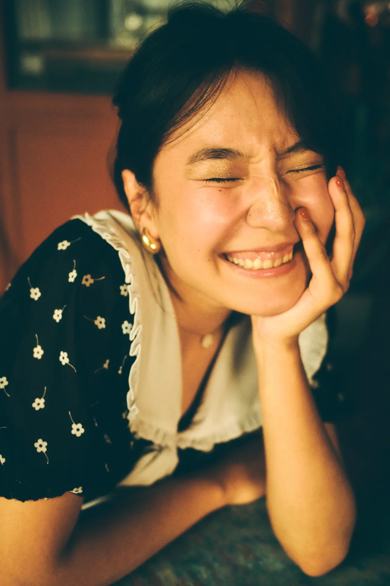

Selected frames / 2020—2026Almaty · Bangkok · Everywhere
Aizat Tanibergen / Visual archive
Pictures with a pulse.
Photographer and videographer from Almaty, now based in Bangkok. A collection of images, places and little moments worth keeping.
From the archive
Selected work
Photographs from the Tanibergen archive
A little about me
Behind the camera
I’m Aizat Tanibergen, a photographer and videographer from Almaty, now based in Bangkok. My personal work is a space to experiment, explore and make something new.
Follow along on Instagram
Have something in mind?
Get in touch on Instagram